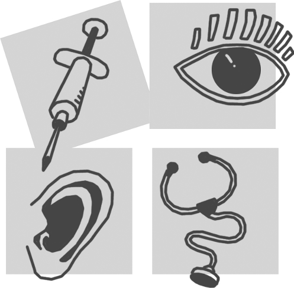

Studienhospital
in der Corona-Pandemie 2020
Stand 25.09.2020
Kurs im Sommersemester 2020

Aufgrund der aus der Corona-Pandemie resultierenden Beschränkungen ist es im Sommersemester 2020 sehr schwierig, praktische Kurse durchzuführen. Trotzdem soll Ihnen ermöglicht werden, einen Teil des curricularen Kurses “Medical Skills Lab” zu absolvieren.
Bitte beachten Sie folgende Information:
Diese Online-Information ist für Studierende des aktuellen 1. klinischen Semesters (Dale-Semester) gedacht!
Die Reihenfolge des Kurses ist gegenüber den Vorsemestern deutlich verändert, so dass entsprechende Podcasts vollkommen anders zugeordnet sind.
Wenn Sie aus vorherigen Semestern zur Wiederholung oder Famulaturvorbereitung auf die Podcasts zugreifen möchten, würde ich Sie bitten, über das ILIAS-System zuzugreifen!
Sie können über den Download-Button (, oben) diese Online-Information als PDF-Datei oder auch als E-Book herunterladen. Bitte beachten Sie aber, dass dieses Tutorial noch in der Entwicklung ist. Es wird während dieses Semesters – entsprechend Ihrer Rückmeldungen – laufend angepasst.
Hintergrund und Ziel
Aufgrund der Corona-Pandemie ist die Veranstaltung praktischer Kurse nur eingeschränkt möglich. Wir mussten (und müssen) viel umorganisieren, um Studierenden und Dozenten trotzdem diese Form der Ausbildung so weit es geht zu ermöglichen.
Auf den folgenden Seiten finden Sie entsprechend vor allem organisatorische Informationen zu folgenden Themen: